發音的溝通經濟學：嘴角少拉開 0.5 公分，訊號就可能損毀。先聽 Podcast，再跟著十個試衣站邊聽邊做，量一量你的英文「西裝」燙平了沒有。
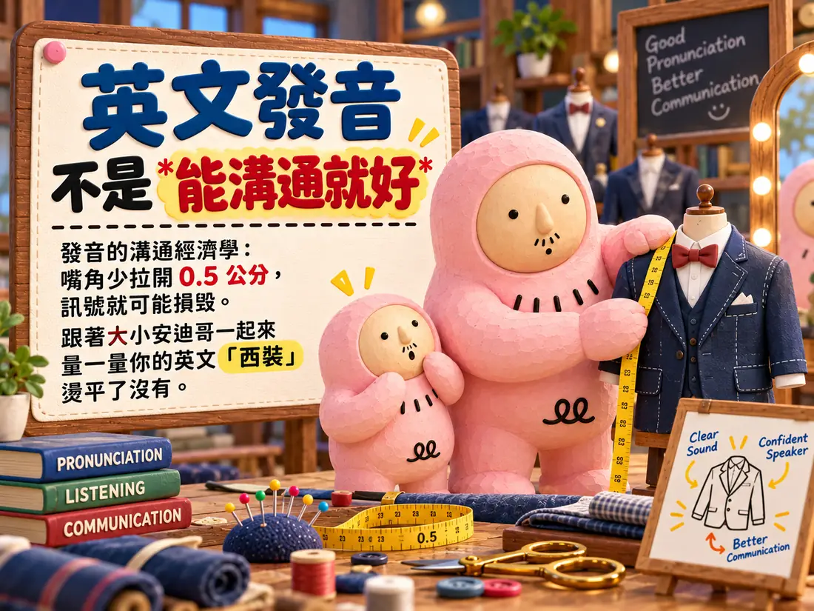
使用方式：捲動時，上方站名列左邊的 ▶ 可隨時播放或暫停 Podcast。英文單字朗讀使用瀏覽器內建語音；語音轉文字與錄音需要麥克風權限，建議用 Chrome 開啟。
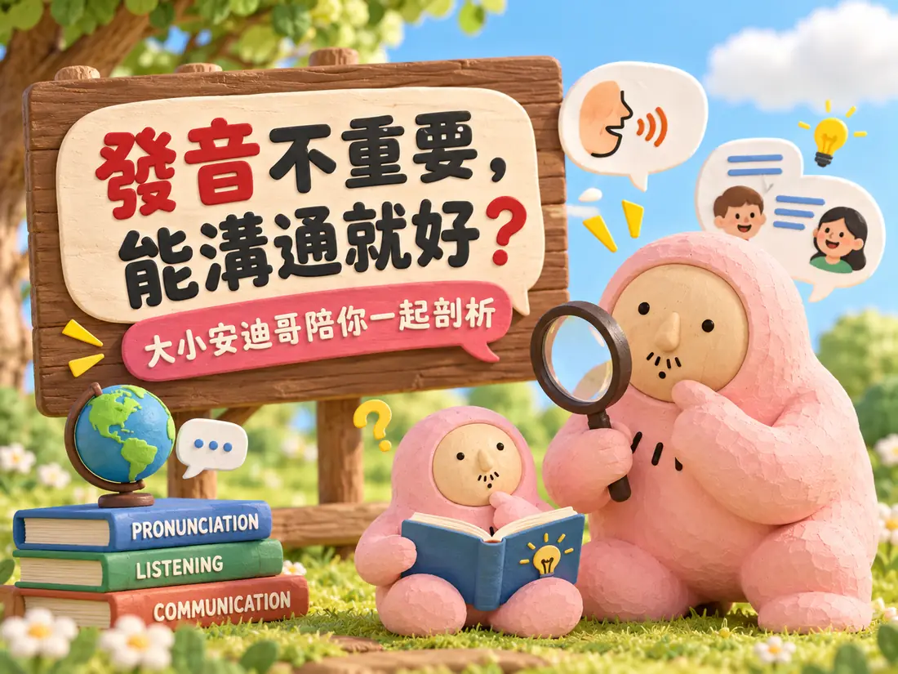
跨國高階會議上，你想緩和氣氛，用英文提議大家會後去海灘（beach）放鬆。只因為嘴角少往兩側拉開 0.5 公分，大家聽到的是一句難聽的髒話。會議室瞬間安靜。
職場上最常聽到的擋箭牌是：「發音不重要啦，能溝通就好。」從認知科學來看，語言交流是一場精密的訊號傳輸工程，一點點誤差都會引起連鎖反應。
聽完整集後，第 7 站會請你再投一次，看看想法有沒有改變。
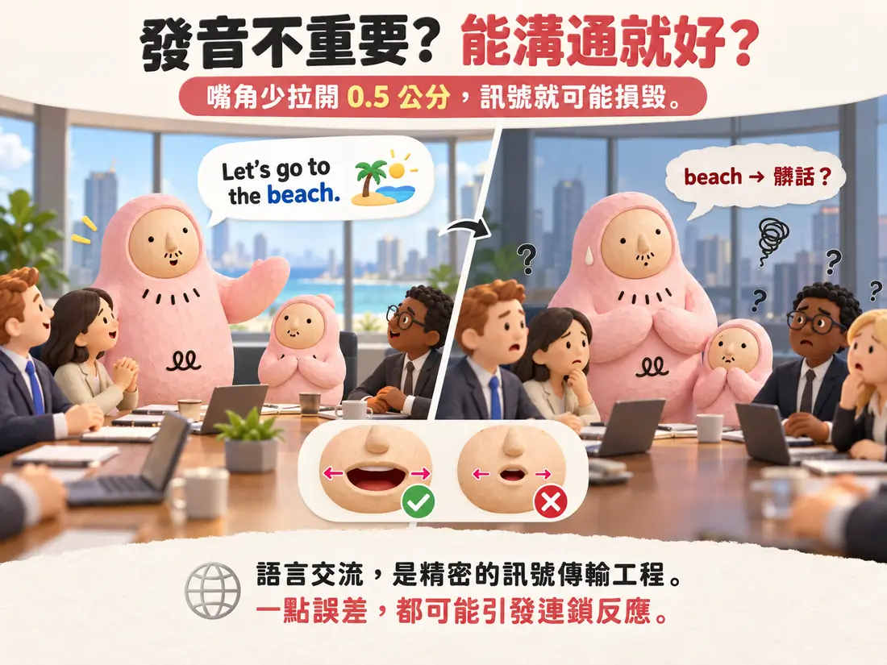
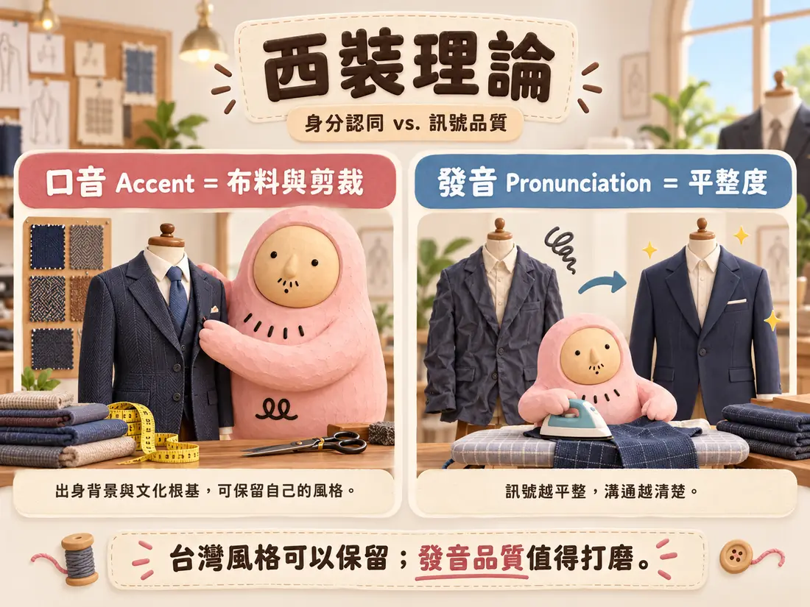
很多人抗拒練發音，是覺得刻意模仿倫敦腔或紐約腔很做作。我們可以用一個比喻來釐清：「西裝理論」把兩件事切開。
硬去模仿外國腔不叫溝通，那叫聲音表演。
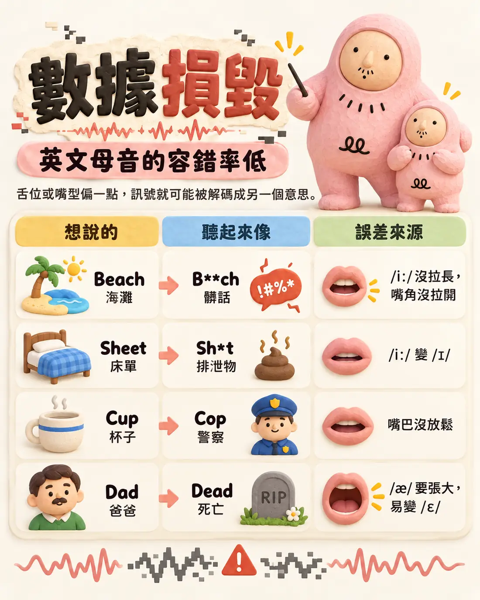
舌頭位置或嘴型偏一點，送出的訊號就被解碼成另一個意思。Podcast 舉的四個地雷：
Dad 念成 Dead，不只是念錯一個字母，而是把對話的情感抽乾，把有溫度的生命變成沒有生命的死物。
| 想說的 | 聽起來像 | 誤差來源 |
|---|---|---|
| Beach 海灘 | B**ch 髒話 | 長短音：/iː/ 沒拉長、嘴角沒拉開 |
| Sheet 床單 | Sh*t 排泄物 | 長短音：/iː/ 變成 /ɪ/ |
| Cup 杯子 | Cop 警察 | 嘴型與共鳴：嘴型沒放鬆 |
| Dad 爸爸 | Dead 死亡 | 蝴蝶音 /æ/ 要像咬大蘋果一樣張開；氣流憋住就變乾扁的 /ɛ/ |
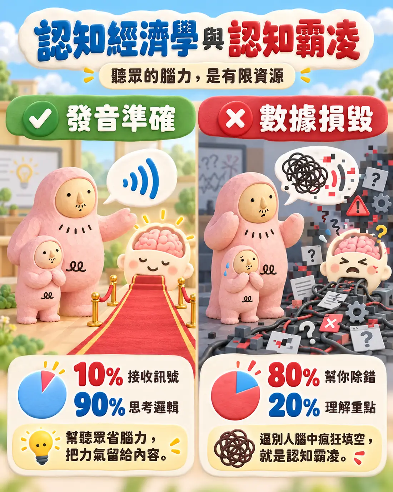
發音準確，等於在聽眾大腦裡鋪一條平坦的紅地毯：只花 10% 腦力接收訊號，剩下 90% 用來思考你的商業邏輯。
發音充滿數據損毀，聽眾被迫花 80% 腦力幫你除錯（Debug），在腦中瘋狂做填空，只剩 20% 理解核心觀念。強迫別人做這種苦力，就是「認知霸凌」。
聽眾耳中的句子：
消除雜訊不只是展現專業，更是對聽眾時間與腦力的最高尊重。
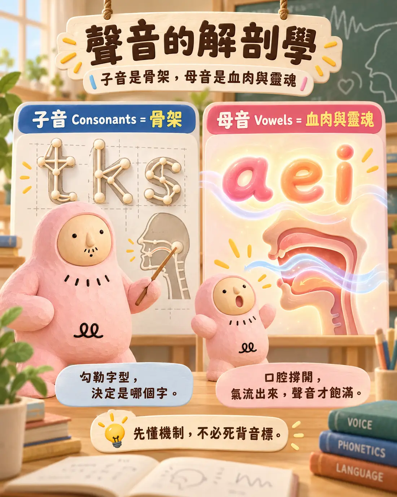
不必死背音標，先理解物理機制。子音（t、k、s…）勾勒字型，決定這是哪個字。母音的本質是氣流：口腔沒撐開，氣流出不來，聲音就像只有骨頭沒有肉，虛弱地飄在空氣中。
依拼字粗略區分，方便看出母音所在位置；真正的母音是聲音，不是字母。
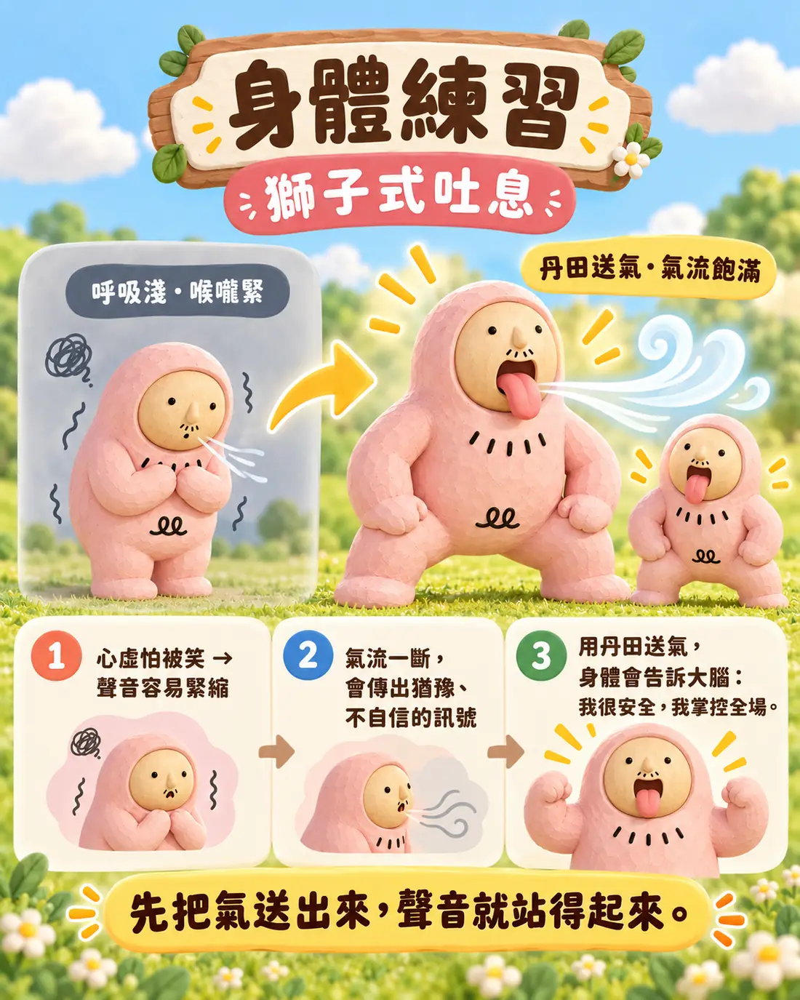
心虛或怕被笑時，呼吸變淺、喉嚨緊縮，氣流被截斷，聲音就傳出「猶豫、不自信」的訊號。用丹田送出飽滿氣流，身體會告訴大腦：「我很安全，我掌控全場。」
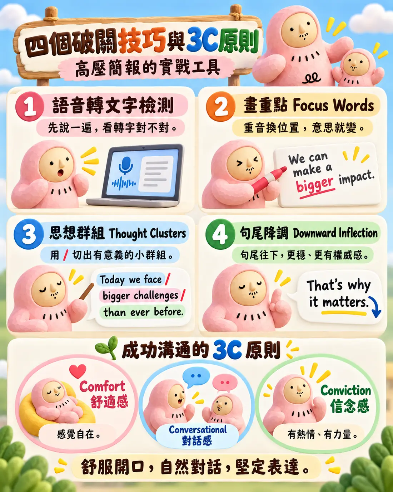
先別寫講稿，把要講的內容對語音轉文字軟體說一遍。軟體打出來的字跟你想說的不一樣，數據損毀就在那裡。
點選你要加重音的字：
別像樹懶把每個字拖長，也別像機關槍掃射。點字與字之間的空隙加上斜線，然後聽聽你的切法。
緊張時句尾容易往上飄，聽起來像在問問題，削弱權威感。放慢句尾、音調往下壓，送出「我講完了，而且很堅定」的訊號。
範例：Today / I want to share / three ideas / that changed our team.
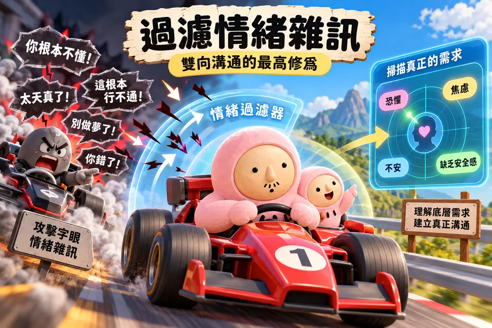
有時製造雜訊的是對方：尖酸的嘲諷、攻擊性的字眼。頂尖高手像電影裡的頂尖車手，面對挑釁完全不動氣，直接濾掉攻擊字眼，雷達掃描到對方底層真正的需求。那通常不是憤怒，而是恐懼與焦慮。
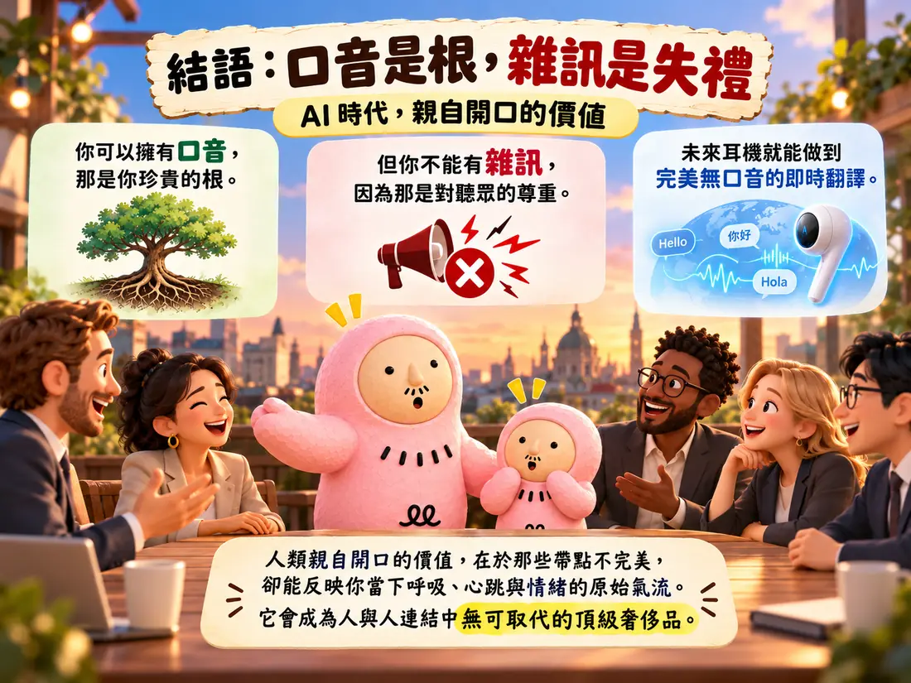
你可以擁有口音，那是你珍貴的根；但你不能有雜訊，因為那是對聽眾的尊重。
未來耳機就能做到完美無口音的即時翻譯。人類親自開口的價值，在於那些帶點不完美、卻能反映你當下呼吸、心跳與情緒的原始氣流。它會成為人與人連結中無可取代的頂級奢侈品。
Podcast 拆解了「能溝通就好」這句話。蕭博士的貼文從時間的角度再看一次這句話，並延伸到背單字和開口說話。
唸 apple 的字音，拼 a-p-p-l-e 的字形，記蘋果的字義。
這三件事，連在母語習得，都不可能同時做到。咱卻都把這種注滿挫折感的 SOP，灌給初學外語的孩子。
學的時候，是傻傻拿一字又一字，往大腦輸入；
用的時候，卻幻想能一句又一句，從嘴巴輸出。